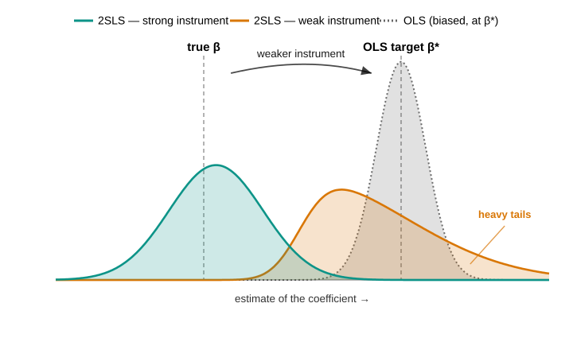

Properties of IV, Weak Instruments, and Specification Tests
Lecture 10
0.1 Where we are
Where this lecture sits
Lecture 9 restored consistency under endogeneity — a valid instrument recovers the structural \(\bbeta\) that OLS misses. Now the bill: at what price? Three prices, the honest accounting after any IV estimate:
Lecture 9 was about existence — can \(\bbeta\) be recovered at all? This one is about quality — how well, how reliably, and under what warnings. The headline is weak instruments: a relevance condition that holds in the population (\(\boldsymbol{\Pi}\neq\mathbf{0}\)) but is small relative to sampling noise breaks every comfortable asymptotic result. 2SLS slides back toward the OLS bias it was meant to cure, its sampling distribution stops being normal, and the usual \(t\)-statistics and confidence intervals mislead. The practical upshot is a short discipline: report the first stage, use weak-identification-robust inference when it is shaky, and run the specification tests — endogeneity (do we even need IV?) and overidentification (are the extra instruments mutually consistent?).
1 Part I · The price of IV: variance and efficiency
1.1 The asymptotic distribution
What 2SLS converges to
Under relevance (full-rank \(\bQ_{zx}=\E[\mathbf{z}\mathbf{x}']\)), exogeneity, and finite moments, scale the 2SLS error by \(\sqrt n\) and read off a bread–meat sandwich — a design inverse around a score variance: \[\sqrt n\,(\bb_{\text{2SLS}}-\bbeta)=\underbrace{\Big(\tfrac1n\bX'\bP_{\bZ}\bX\Big)^{-1}}_{\pto\ \mathbf{H}^{-1}}\; \underbrace{\tfrac1{\sqrt n}\bX'\bP_{\bZ}\beps}_{\dto\ \Normal(\mathbf{0},\,\boldsymbol{\Sigma})} \ \dto\ \Normal(\mathbf{0},\,\bV),\qquad \boxed{\ \bV=\mathbf{H}^{-1}\,\boldsymbol{\Sigma}\,\mathbf{H}^{-1}\ }\] \[\underbrace{\mathbf{H}=\bQ_{xz}\bQ_{zz}^{-1}\bQ_{zx}}_{\text{design (bread)}},\qquad \underbrace{\boldsymbol{\Sigma}=\bQ_{xz}\bQ_{zz}^{-1}\,\bOmega\,\bQ_{zz}^{-1}\bQ_{zx}}_{\text{score variance (meat)}},\qquad \bOmega=\E[\mathbf{z}\mathbf{z}'\varepsilon^2].\]
Where the sandwich comes from. Isolate the sampling error first. Substitute the structural \(\bY=\bX\bbeta+\beps\) into \(\bb_{\text{2SLS}}=(\bX'\bP_{\bZ}\bX)^{-1}\bX'\bP_{\bZ}\bY\); the \(\bX\bbeta\) piece reproduces \(\bbeta\) exactly, leaving \[\bb_{\text{2SLS}}=\bbeta+(\bX'\bP_{\bZ}\bX)^{-1}\bX'\bP_{\bZ}\beps\ \Longrightarrow\ \bb_{\text{2SLS}}-\bbeta=(\bX'\bP_{\bZ}\bX)^{-1}\bX'\bP_{\bZ}\beps,\] truth plus a term driven by \(\beps\). Rescale by \(\sqrt n\), splitting the powers of \(n\) so each factor keeps its own limit (using \([\tfrac1n\bA]^{-1}=n\bA^{-1}\) and \(\sqrt n\cdot\tfrac1n=\tfrac1{\sqrt n}\)): \[\sqrt n\,(\bb_{\text{2SLS}}-\bbeta)=\Big(\tfrac1n\bX'\bP_{\bZ}\bX\Big)^{-1}\tfrac1{\sqrt n}\bX'\bP_{\bZ}\beps.\] Now send the two factors to their limits, using \(\bX'\bP_{\bZ}=\bX'\bZ(\bZ'\bZ)^{-1}\bZ'\): \[\tfrac1n\bX'\bP_{\bZ}\bX\pto\bQ_{xz}\bQ_{zz}^{-1}\bQ_{zx}=\mathbf{H}\quad(\text{LLN; finite \& invertible by relevance}),\] \[\tfrac1{\sqrt n}\bX'\bP_{\bZ}\beps=\bQ_{xz}\bQ_{zz}^{-1}\cdot\tfrac1{\sqrt n}\bZ'\beps\dto\Normal\big(\mathbf{0},\ \bQ_{xz}\bQ_{zz}^{-1}\bOmega\,\bQ_{zz}^{-1}\bQ_{zx}\big)=\Normal(\mathbf{0},\boldsymbol{\Sigma}),\] since \(\tfrac1{\sqrt n}\bZ'\beps\dto\Normal(\mathbf{0},\bOmega)\) by a CLT. Slutsky assembles \(\bV=\mathbf{H}^{-1}\boldsymbol{\Sigma}\,\mathbf{H}^{-1}\).
The two special cases, precisely. Under homoskedasticity \(\E[\varepsilon^2\mid\mathbf{z}]=\sigma^2\), so \(\bOmega=\sigma^2\bQ_{zz}\) and \(\boldsymbol{\Sigma}=\bQ_{xz}\bQ_{zz}^{-1}(\sigma^2\bQ_{zz})\bQ_{zz}^{-1}\bQ_{zx}=\sigma^2\mathbf{H}\), giving \(\bV=\sigma^2\mathbf{H}^{-1}\) — a single matrix, not a sandwich. When \(\ell=k\), \(\bQ_{zx}\) is square and \(\mathbf{H}^{-1}=\bQ_{zx}^{-1}\bQ_{zz}\bQ_{xz}^{-1}\); then \(\mathbf{H}^{-1}\bQ_{xz}\bQ_{zz}^{-1}=\bQ_{zx}^{-1}\) and \(\bQ_{zz}^{-1}\bQ_{zx}\mathbf{H}^{-1}=\bQ_{xz}^{-1}\), so the \(\bQ_{zz}\)’s cancel out of the sandwich and \(\bV=\bQ_{zx}^{-1}\bOmega\,\bQ_{xz}^{-1}\). The structure \(\bV=(\text{design})^{-1}(\text{score variance})(\text{design})^{-1}\) is the thread that runs through OLS (Lecture 6), GLS (Lecture 7) and now 2SLS.
\(\bZ'\beps=\sum_i\mathbf{z}_i\varepsilon_i\) is a sum of \(n\) terms that are mean-zero (\(\E[\mathbf{z}\varepsilon]=\mathbf{0}\), exogeneity) and finite-variance (\(\Var(\mathbf{z}_i\varepsilon_i)=\bOmega\)), so \(\Var(\bZ'\beps)=n\bOmega\) — the sum fluctuates at scale \(\sqrt n\). Pick the normalisation that keeps the variance finite and non-zero:
- \(\div\,n\) (the average): variance \(\bOmega/n\to\mathbf{0}\) — collapses to \(\mathbf{0}\) (the LLN).
- \(\div\,1\) (raw sum): variance \(n\bOmega\to\infty\) — diverges.
- \(\div\,\sqrt n\): variance \(=\bOmega\) for every \(n\) — the CLT gives \(\tfrac1{\sqrt n}\bZ'\beps\dto\Normal(\mathbf{0},\bOmega)\).
The \(\sqrt n\) is the growth rate of a sum of \(n\) centred shocks (a random walk’s displacement \(\sim\sqrt n\)), and it is exactly what makes the estimator \(\sqrt n\)-consistent: the \(\sqrt n\) in \(\sqrt n(\bb-\bbeta)\) matches the \(1/\sqrt n\) on the score.
Standard errors you can run
The variance estimator just plugs sample moments into \(\bV=\mathbf{H}^{-1}\boldsymbol{\Sigma}\mathbf{H}^{-1}\); the only trap is which residual feeds the meat.
Why the actual \(\mathbf{x}\). The parameter lives in the structural equation \(y=\mathbf{x}'\bbeta+\varepsilon\), so the standard error must estimate the variance of the true \(\varepsilon\) — recovered by \(\hat\varepsilon=y-\mathbf{x}'\bb_{\text{2SLS}}\). The naïve second-stage residual uses the fitted regressor: with \(\mathbf{x}=\hat{\mathbf{x}}+\hat{\mathbf{v}}\) (first-stage residual \(\hat{\mathbf{v}}\)), \[y-\hat{\mathbf{x}}'\bb_{\text{2SLS}}=\underbrace{(y-\mathbf{x}'\bb_{\text{2SLS}})}_{\hat\varepsilon}+\hat{\mathbf{v}}'\bb_{\text{2SLS}} =\hat\varepsilon+\hat{\mathbf{v}}'\bb_{\text{2SLS}},\] contaminated by the extra \(\hat{\mathbf{v}}'\bb_{\text{2SLS}}\) — so its variance is wrong. Note the point estimate is identical — \(\bb_{\text{2SLS}}=(\hat{\bX}'\hat{\bX})^{-1}\hat{\bX}'\bY\) is exactly the hand-run stage-2 slope, and even the “bread” \((\hat{\bX}'\hat{\bX})^{-1}=(\bX'\bP_{\bZ}\bX)^{-1}\) is the right one; only the reported SE differs, so this is purely an inference bug, not a bias. A 2SLS command forms \(\hat\varepsilon\) from the actual \(\mathbf{x}\) and corrects for the fact that \(\hat{\mathbf{x}}\) was estimated; the two separate OLS regressions do neither, which is why they must never be run by hand for inference (flagged in Lecture 9).
IV is less efficient than OLS
When \(\mathbf{x}\) is exogenous — so OLS is also consistent — and errors are homoskedastic, OLS is the efficient (Gauss–Markov) choice and IV strictly loses precision: \[\bV_{\text{IV}}-\bV_{\text{OLS}}\ \succeq\ \mathbf{0}\qquad(\text{positive semidefinite, under homoskedasticity}).\]
The intuition is the same “information thrown away” logic as 2SLS itself. OLS uses all the variation in \(\mathbf{x}\); IV restricts to the component \(\bP_{\bZ}\bX\) driven by the instruments, which is smaller (a projection shrinks). A smaller signal in the denominator of the estimator means a larger sampling variance. Formally, under homoskedasticity \(\bV_{\text{OLS}}=\sigma^2\bQ_{xx}^{-1}\) and \(\bV_{\text{IV}}=\sigma^2\mathbf{H}^{-1}\), so \(\bV_{\text{IV}}\succeq\bV_{\text{OLS}}\iff\bQ_{xx}\succeq\mathbf{H}=\bQ_{xz}\bQ_{zz}^{-1}\bQ_{zx}\) (inverting reverses the order). Project \(\mathbf{x}\) on \(\mathbf{z}\) — the population first stage — as \(\mathbf{x}=\bGamma'\mathbf{z}+\mathbf{u}\) with \(\bGamma=\bQ_{zz}^{-1}\bQ_{zx}\) and \(\E[\mathbf{z}\mathbf{u}']=\bzero\). The cross terms vanish, so \[\bQ_{xx}=\E[\mathbf{x}\mathbf{x}']=\underbrace{\bGamma'\bQ_{zz}\bGamma}_{=\,\mathbf{H}}+\underbrace{\E[\mathbf{u}\mathbf{u}']}_{=\,\Var(\mathbf{u})} \ \Longrightarrow\ \bQ_{xx}-\mathbf{H}=\Var(\mathbf{u})\succeq\bzero,\] using \(\bGamma'\bQ_{zz}\bGamma=\bQ_{xz}\bQ_{zz}^{-1}\bQ_{zx}=\mathbf{H}\). The gap is exactly the variance of the part of \(\mathbf{x}\) the instruments cannot explain (the first-stage residual \(\mathbf{u}\)) — “information thrown away” as a matrix. Equality holds only if \(\Var(\mathbf{u})=\bzero\), i.e. \(\mathbf{x}\) lies in the span of \(\mathbf{z}\); so the IV “bread” is never larger than the OLS one and its inverse — the variance — is never smaller. The lesson is practical: do not reach for IV reflexively. Endogeneity has to be real, and strong enough, to justify the precision you give up. When it is not, OLS dominates on both bias (now negligible) and variance.
2 Part II · Weak instruments
2.1 The problem
What makes an instrument weak
Relevance is not binary. \(\boldsymbol{\Pi}\neq\mathbf{0}\) secures consistency in the limit, but whether a sample can use the instrument depends on the first stage’s signal-to-noise. Estimating the first stage \(\mathbf{x}=\boldsymbol{\Pi}'\mathbf{z}+\mathbf{v}\) carries sampling error of order \(1/\sqrt n\), so the signal \(\boldsymbol{\Pi}\) stands against noise \(\sim 1/\sqrt n\): their ratio is \(\sqrt n\,\boldsymbol{\Pi}\) — up to a constant, the first-stage \(t\)-statistic.
The first-stage \(t\), step by step. Take the scalar first stage with an intercept, \(x=\alpha+\pi z+v\). OLS gives \(\hat\pi=\widehat{\Cov}(z,x)/\widehat{\Var}(z)\) and the sampling error \(\hat\pi-\pi=\sum_i(z_i-\bar z)v_i/\sum_i(z_i-\bar z)^2\). Its standard error is \[\text{se}(\hat\pi)=\frac{\sigma_v}{\sqrt{\sum_i(z_i-\bar z)^2}}=\frac{\sigma_v}{\sqrt{n\,\Var(z)}}=\frac{\kappa}{\sqrt n}, \qquad \kappa=\frac{\sigma_v}{\sqrt{\Var(z)}}.\] The denominator is the demeaned sum of squares, \(\tfrac1n\sum_i(z_i-\bar z)^2\pto\Var(z)\): only the variation of \(z\) around its mean identifies the slope. The \(1/\sqrt n\) is the usual rate at which the error of an average shrinks — independent noise cancels at rate \(\sqrt n\). Hence the \(t\)-statistic for \(H_0:\pi=0\), \[t=\frac{\hat\pi}{\text{se}(\hat\pi)}\approx\frac{\pi}{\kappa/\sqrt n}=\frac{\sqrt n\,\pi}{\kappa}\ \propto\ \sqrt n\,\pi,\] so \(\sqrt n\,\boldsymbol{\Pi}\) is the first-stage \(t\) up to the noise scale \(\kappa=\sigma_v/\sqrt{\Var(z)}\) — strong instruments are those with much first-stage variation (\(\Var(z)\) large) and little residual noise (\(\sigma_v\) small).
Why “more data” is not the fix. For a fixed \(\pi\neq0\), \(t=\sqrt n\,\pi/\kappa\to\infty\), so any nonzero instrument eventually looks strong — weakness is a finite-sample phenomenon. But you do not have \(n\to\infty\); you have the \(n\) in front of you, and what governs the quality of the normal approximation is the ratio \(\sqrt n\,\pi\), not \(n\) alone. A genuinely tiny \(\pi\) keeps that ratio small even at enormous \(n\): Angrist–Krueger (1991) had \(n\approx 329{,}000\) and the instruments were still weak (next slides). “Get more data” is no answer when a third of a million observations is not enough.
Staiger–Stock: keeping weakness in view
We want the real shape of the 2SLS sampling distribution when the instrument is weak — there the textbook “it is normal” simply fails. Any such shape comes from a limit (\(n\to\infty\)); but standard asymptotics hold \(\boldsymbol{\Pi}\) fixed, forcing \(\sqrt n\,\boldsymbol{\Pi}\to\infty\), so in that limit every instrument ends up strong and only the normal ever comes back — quietly assuming the problem away.
The problem, precisely. Asymptotics is a fiction used to approximate a finite sample: the \(n\to\infty\) limit is useful only if it resembles your actual \(n\). Conventional asymptotics take \(\boldsymbol{\Pi}\) fixed, which forces \(\sqrt n\,\boldsymbol{\Pi}\to\infty\) — a limiting world where the first stage is overwhelmingly strong and 2SLS is exactly normal. For a marginal instrument that fiction does not resemble reality, yet it reports “normal” regardless, because weakness is absent from the limit it chose. (You would resolve a faint star with an infinite telescope — but you have the telescope you have.)
The fix, intuitively. Local-to-zero keeps the instrument marginal in the limit instead of letting it turn strong. In the strong case the first stage eventually overwhelms the noise, so the quantity 2SLS divides by settles on a fixed value and the estimator comes out normal. Under local-to-zero the first stage is held just comparable to the noise, so that quantity never settles — it stays part signal, part noise. Dividing by something that stays random is what leaves the 2SLS distribution non-normal and heavy-tailed; and because the leftover noise is the very noise correlated with the error (the endogeneity), it pulls the estimate toward OLS — the bias IV was meant to remove. Push the instrument back to full strength and the noise becomes negligible again, recovering the textbook normal: conventional theory is just the strong-instrument edge of this picture. The moral: relevance in the population does not rescue you if the sample cannot see it.
The collapse, in one picture

Bias toward OLS, and the concentration parameter
A weak first stage drags 2SLS back toward the OLS bias it was meant to remove. How strong the first stage is gets summarised by one number — the concentration parameter \(\mu^2\), a signal-to-noise measure of the first stage. Big \(\mu^2\) = strong instrument; in practice you read it off the first-stage \(F\).
The one number, and how to read it. The concentration parameter is the first stage’s signal-to-noise, accumulated over the sample: \[\mu^2=\frac{n\,\boldsymbol{\Pi}'\E[\mathbf{z}\mathbf{z}']\boldsymbol{\Pi}}{\sigma_v^2}\approx\frac{\boldsymbol{\Pi}'\bZ'\bZ\,\boldsymbol{\Pi}}{\sigma_v^2} \quad(\text{the matrix version of the squared first-stage }t).\] You never compute \(\mu^2\) directly — its sample counterpart is the first-stage \(F\) (\(\E[F]\approx1+\mu^2/\ell\)), which is what you report. Under local-to-zero it is the frozen \(\mathbf{C}'\E[\mathbf{z}\mathbf{z}']\mathbf{C}/\sigma_v^2\).
Why it controls the bias. 2SLS regresses on the fitted \(\hat{\bX}=\bP_{\bZ}\bX=\bZ\boldsymbol{\Pi}+\bP_{\bZ}\mathbf{v}\): the true signal \(\bZ\boldsymbol{\Pi}\) (clean, since \(\mathbf{z}\indep\varepsilon\)) plus \(\bP_{\bZ}\mathbf{v}\), the slice of first-stage noise the estimated projection catches by chance. That noise carries \(\varepsilon\) (recall \(\Cov(\mathbf{v},\varepsilon)\neq0\) is the endogeneity, Lecture 9), so it smuggles the OLS bias back in. Signal \(\propto\mu^2\), caught noise \(\propto\ell\) (more instruments overfit more), so the fraction of the OLS bias that survives is \[\frac{\E[\bb_{\text{2SLS}}]-\bbeta}{\E[\bb_{\text{OLS}}]-\bbeta}\approx\frac{\ell}{\mu^2+\ell}=\frac{\text{noise}}{\text{signal}+\text{noise}}.\] Small \(\mu^2\) (or large \(\ell\)) \(\to\) ratio \(\to1\): 2SLS inherits the OLS bias. For a feel, \(\ell=1,\mu^2=9\) gives \(1/10\) — 2SLS keeps 10% of the OLS bias, with \(\E[F]\approx10\): the origin of the “\(F>10\)” rule.
2.2 Diagnosis and honest inference
The first-stage F — and why \(F>10\) is not enough
The first-stage \(F\) — the joint significance of the excluded instruments in the first stage — is the sample measure of strength (\(\E[F]\approx1+\mu^2/\ell\), so it estimates \(\mu^2\)). Staiger–Stock’s rule of thumb: \(F>10\) is “strong enough”.
What the \(F\) measures, and the rule. The first-stage \(F\) tests \(H_0:\boldsymbol{\Pi}=\mathbf{0}\) (the excluded instruments are jointly irrelevant). Even useless instruments give \(F\approx1\), so the excess \(F-1\) is signal: \(\E[F]\approx1+\mu^2/\ell\), i.e. \(\mu^2\approx\ell(F-1)\). For a single instrument \(F=10\) means \(\mu^2=9\) and a bias ratio \(\ell/(\mu^2+\ell)=1/10\) — the “\(F>10\)” and the “10% bias” are the same number.
Stock–Yogo make it rigorous. They replace the informal “10” with proper critical values for a target you pick: cap the 2SLS bias relative to OLS (gives numbers near 10), or cap the size distortion of the Wald test — how far a nominal 5% test’s true rejection rate may stray (gives much larger numbers) (Stock and Yogo 2005).
Why bias \(\neq\) inference, and the \(tF\) fix. Controlling the point estimate’s bias is easier than making the \(t\)-test valid, so weak instruments wreck the \(t\) and CI even at \(F=10\). Lee–McCrary–Moreira–Porter show the usual \(t\) (critical value \(1.96\)) is honest only at effective \(F\approx104.7\); their \(tF\) procedure instead inflates the critical value as a function of the observed \(F\), giving valid inference at lower \(F\) (Lee et al. 2022).
\(F\) is itself random. Screening on \(F>10\) and then reporting the usual \(t\) is a pre-test: conditioning on a large realised \(F\) distorts the estimator’s distribution, so true coverage is worse than nominal. Report \(F\) as information, not as a gate — the weak-robust methods of the next slide avoid the threshold altogether (Andrews et al. 2019).
Weak-robust inference: Anderson–Rubin
The fix is inference that is valid whatever the instrument strength. The workhorse is the Anderson–Rubin (AR) test of \(H_0:\bbeta=\bbeta_0\): under the null, \(y_i-\mathbf{x}_i'\bbeta_0=\varepsilon_i\) is exogenous, so regress the imposed residual on the instruments and test that they have no explanatory power.
AR’s validity is transparent. Fix a candidate \(\bbeta_0\). If it is the truth, then \(y-\mathbf{x}'\bbeta_0=\varepsilon\) and exclusion says \(\E[\mathbf{z}\varepsilon]=0\), so the instruments should not predict the imposed residual — the regression coefficient \(\boldsymbol{\gamma}\) is zero and the \(F\)-statistic is small. If \(\bbeta_0\) is wrong, the imposed residual still carries a piece of \(\mathbf{x}\), which the instruments do predict, so \(F\) is large. Crucially, nothing in this argument uses the first stage \(\boldsymbol{\Pi}\) — it never appears — so the test keeps its size even when instruments are arbitrarily weak. The price is power: when identification is genuinely weak, the confidence set is wide or unbounded, which is the correct answer, not a bug.
The cautionary tale
Angrist–Krueger (1991) instrumented schooling with quarter of birth interacted with year and state — hundreds of individually weak instruments. Bound, Jaeger & Baker showed the 2SLS estimates were biased toward OLS, and — the famous demonstration — that replacing quarter of birth with randomly generated instruments produced similar, deceptively “precise” 2SLS estimates. A large sample (\(n\approx 300{,}000\)) gave no protection. This paper launched the weak-instrument literature (Bound et al. 1995).
The weak-instrument diagnosis is the mirror image of Lecture 9’s rank condition: there, \(\rank(\E[\mathbf{z}\mathbf{x}'])=k\) was identification in the population; here, a first stage that is full-rank but tiny is the practical failure. Strong identification is a quantitative version of the rank condition.
3 Part III · Specification tests
3.1 Do we need IV, and are the instruments consistent?
Testing endogeneity: Hausman–Wu
If \(\mathbf{x}\) were exogenous, OLS and IV would both be consistent and OLS would be efficient (Part I). A large gap between them is therefore evidence of endogeneity.
The control-function form makes the logic vivid. The endogeneity is carried entirely by \(\mathbf{v}\)’s correlation with \(\varepsilon\). Project \(\varepsilon\) on \(\mathbf{v}\): \(\varepsilon=\mathbf{v}'\boldsymbol{\rho}+\xi\) with \(\xi\) now clean. Substituting, \(y=\mathbf{x}'\bbeta+\mathbf{v}'\boldsymbol{\rho}+\xi\) — so once we control for the first-stage residual \(\hat{\mathbf{v}}\), the remaining error is exogenous and OLS on this augmented regression is consistent for \(\bbeta\). The coefficient \(\boldsymbol{\rho}\) is zero iff \(\mathbf{x}\) is exogenous, so testing \(\boldsymbol{\rho}=\mathbf{0}\) tests endogeneity directly. As a bonus the augmented OLS point estimate of \(\bbeta\) equals 2SLS — the “control-function” route to the same number.
Testing overidentification: Sargan / Hansen
When \(\ell>k\) there are more moment conditions than parameters, so the instruments can be checked against each other: if all are valid, the 2SLS residuals should be (nearly) orthogonal to every instrument.
4 Summary
What to take away
- IV buys consistency under endogeneity at a price in variance: when \(\mathbf{x}\) is exogenous, OLS is consistent and more efficient — so do not use IV reflexively.
- 2SLS is asymptotically \(\Normal(\mathbf{0},\bV)\) with a sandwich variance; use a proper 2SLS command for robust/clustered standard errors.
- Weak instruments — a first stage small relative to noise — bias 2SLS toward OLS, break normality, and invalidate the usual \(t\) and CI. More (weak) instruments make it worse.
- Report the first stage \(F\), but know \(F>10\) controls bias, not the \(t\)-test; when in doubt use weak-robust inference (Anderson–Rubin / CLR), which is valid at any instrument strength.
- Specification tests: Hausman–Wu asks do we need IV?; Sargan/Hansen asks are the surplus instruments mutually consistent? — but exclusion of the core instruments stays an untestable design argument.